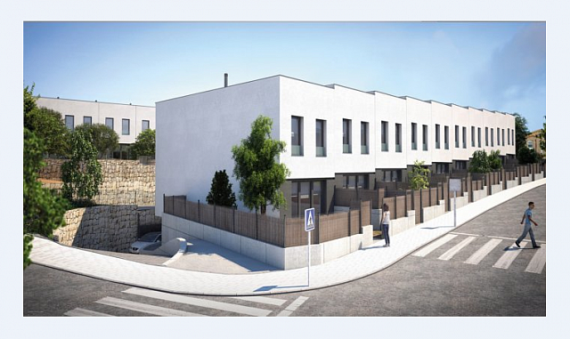
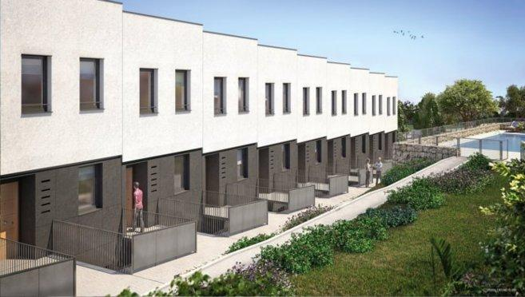
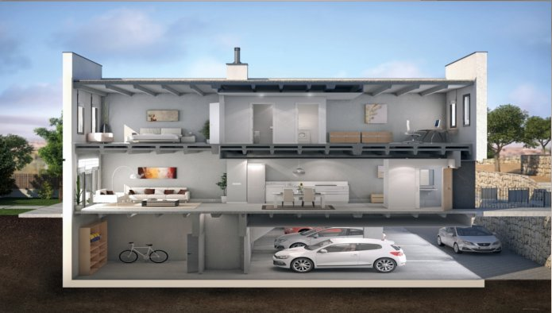
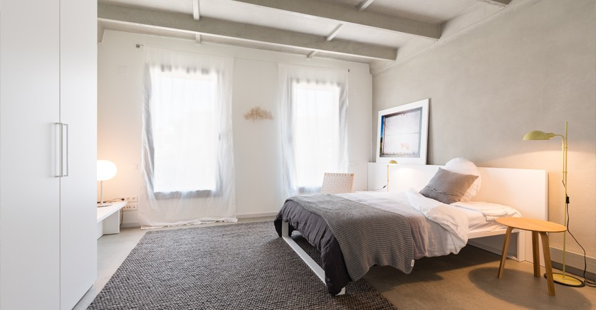
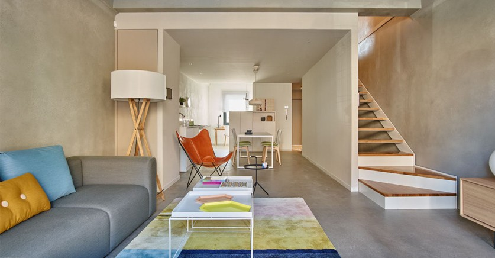

Комплекс «розумних» екобудинків під Барселоною управляється за допомогою мобільних додатків
Екобудівництво – один з ключових шляхів досягнення «зелених» цілей країн Європи. Приміром, в рамках загальноєвропейського екологічного плану в Іспанії до 2020 року всі нові будинки та споруди повинні мати низький рівень енергоспоживання. Чимало експертів скептично відносяться до цієї мети та вважають, що виконати її неможливо. Однак, кількість подібних об'єктів в країні постійно збільшується.
Нещодавно в містечку Сан-Андрес-де-Льеванера в околицях Барселони відбулося відкриття комплексу «розумних» будинків. В помешканнях із залізобетонних модулів контроль за системою безпеки, освітленням і економією електроенергії здійснюється за допомогою мобільного додатку. У цьому комплексі використовуються виключно поновлювані джерела енергії, повідомляє ресурс
Крім того, усі будинки комплексу мають найвищий клас енергоспоживання – клас A. Обігріваються вони з використанням систем, що працюють на ВДЕ.
Також забудовники подбали й про комфорт нових помешкань. Загалом, комплекс будинків в Сан-Андрес – це модульна конструкція. Тобто кожен з модулів не залежить від іншого, що захищає мешканців від зайвого шуму і забезпечує кращу звукоізоляцію.
Цікаво, що комплекс побудувало профільне агентство одного з банків Іспанії.
Очікується, що об'єкти будуть здані вже в липні цього року. Вони виставлені на продаж за ціною в 290 000 євро.

|